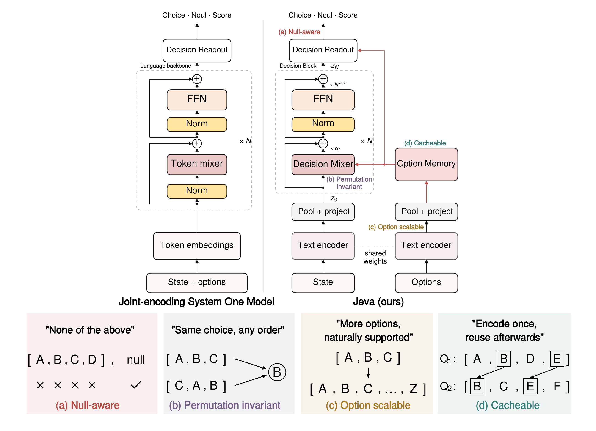
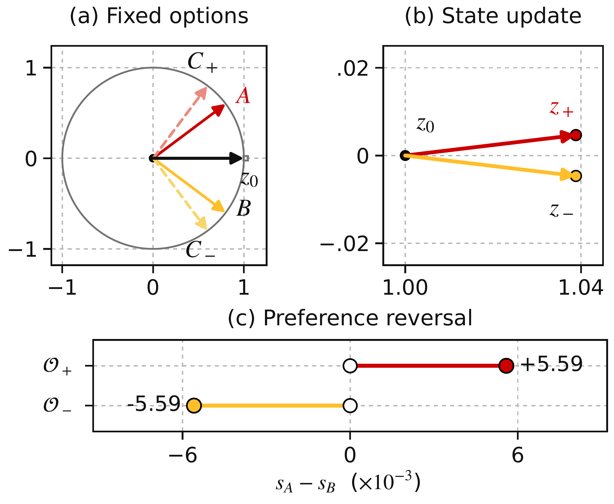
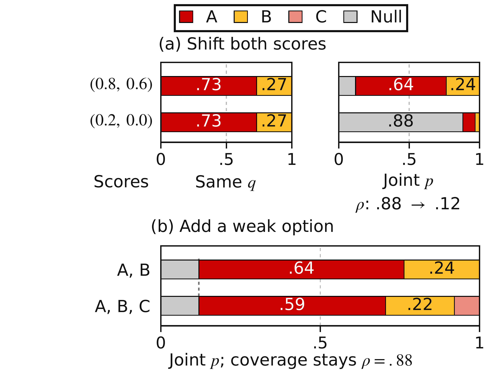
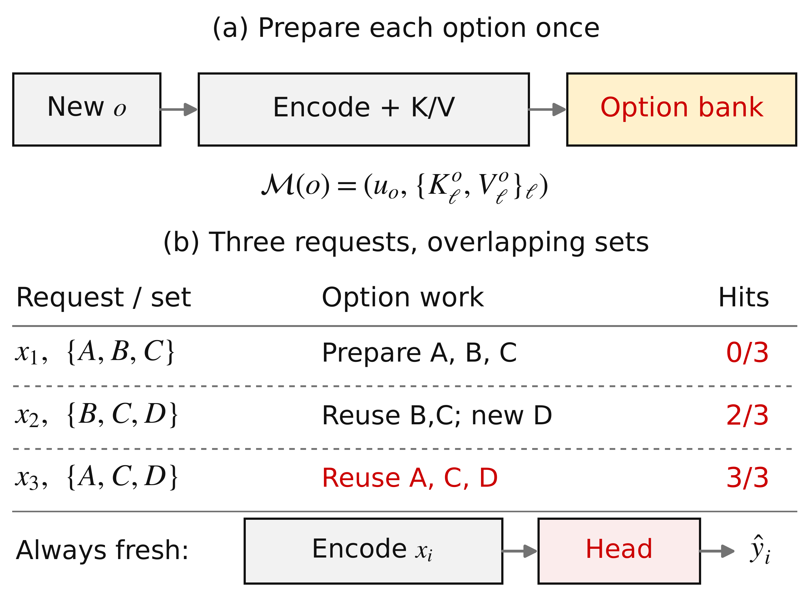
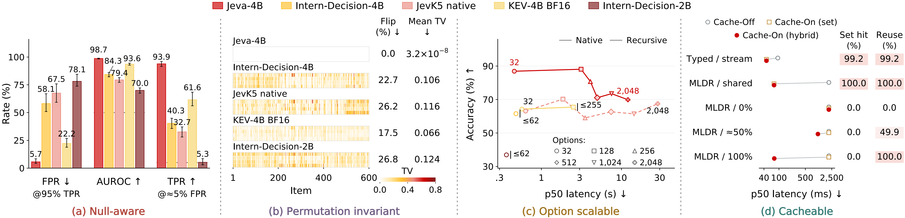
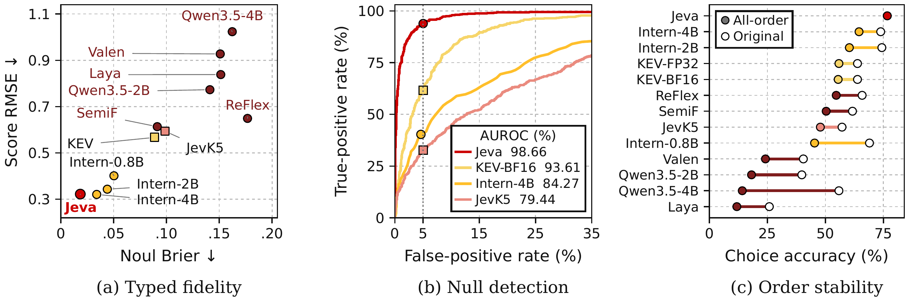
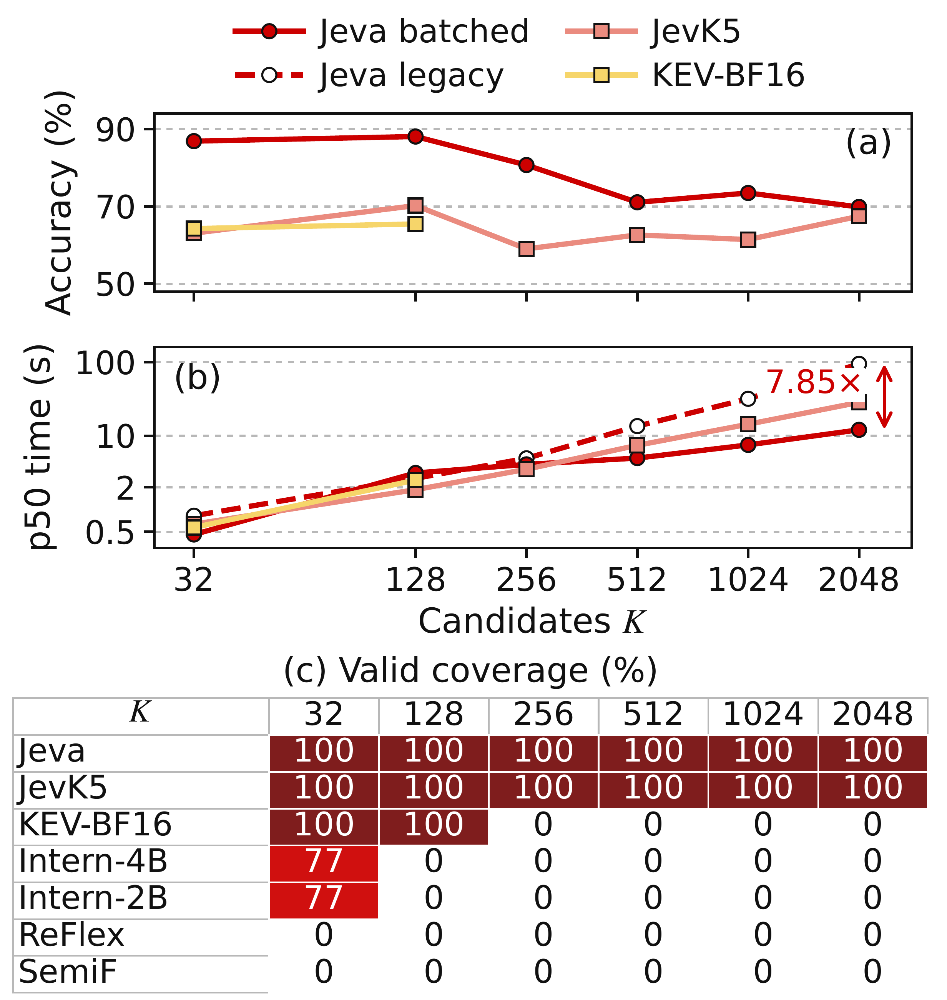
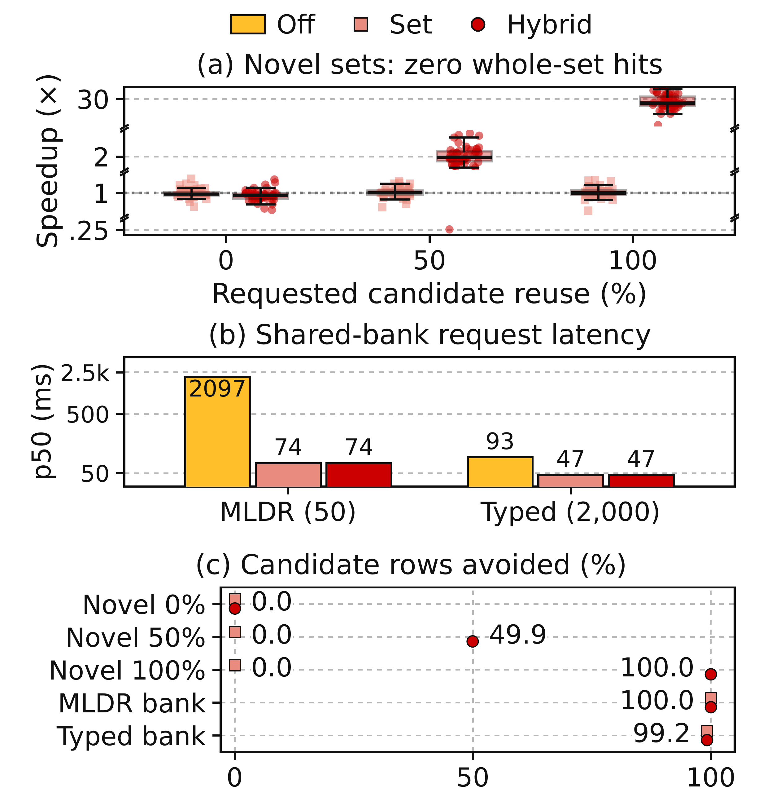
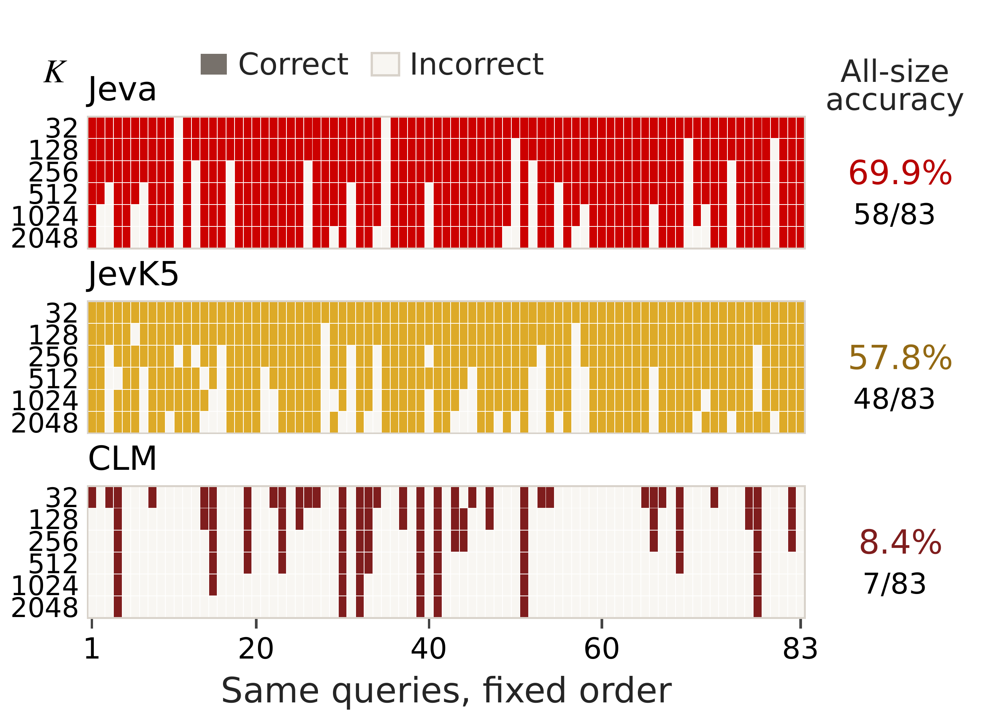

Order should not decide the answer.
Symmetric candidate aggregation makes option probabilities permutation-equivariant.
Permutation invarianceOn first principles
“The formulation of a problem is often more essential than its solution.”
A native architecture for typed decisions
National University of Singapore
* Corresponding author
The state changes. The alternatives often do not.
Encode independently. Decide collectively. Reuse what stays the same.
01 / The decision problem
Symmetric candidate aggregation makes option probabilities permutation-equivariant.
Permutation invarianceA shared scoring rule handles variable candidate counts. Bounded encoding batches keep the complete set available to the decision head.
Option scalabilityCoverage estimates whether an acceptable option exists, separately from competition among the options.
Null awarenessOption vectors and their layer-specific projections can be reused across new states and newly assembled sets.
Computational reuse
Inside the architecture



02 / Jeva in motion
Follow one request through independent encoding, candidate-conditioned state refinement, and the typed readout. This animation explains the computation; it is not a recorded model trace.
Encode each option independently. Store its semantic vector and the projected keys and values used by the decision block.
03 / Same semantics, new decisions
Choose a scenario to see what each cache reuses. Every scenario has a new request state; no previous answer is reused. Counts below are exact for this illustrative three-option example, not benchmark timings.
CHANGING REQUEST
“My payment was taken twice.”
CURRENT CANDIDATES
INDEPENDENT OPTION MEMORY
| Mode | Options |
|---|---|
| Cache-Off | 3 / 3 |
| Set | 3 / 3 |
| Hybrid | 3 / 3 |
Exact-set hit No
Option reuse 0 / 3
Warm scenarios start from the cached tuple [A, B, C]. The implementation keys exact-set entries by the ordered tuple; Hybrid can gather individual memories in any requested order.
04 / Measured behavior
One decision block with a Qwen3.5-4B backbone. These are measured results from the manuscript—not outputs of the animations above.
Typed Test accuracy
2,000 requests
Null-detection AUROC
BANKING77 · K = 16
Under tested permutations
600 Choice items
Options in one decision set
ToolRet diagnostic

| Model | Typed Test | BANKING77 K = 16 | MASSIVE K = 16 | Mind2Web Cross-task |
|---|---|---|---|---|
| Jev-1.13.0 | 74.10 | 82.50 | 81.61 | 66.26 |
| JevK5 native | 62.30 | 69.03 | 69.70 | 51.47 |
| InternDecision-4B | 78.70 | 75.03 | 75.79 | 48.02 |
| Re·Flex-4B | 58.85 | 74.38 | 71.39 | 52.08 |
| KEV-4B (BF16) | 66.00 | 82.47 | 73.54 | 40.32 |
| CLM-8B | 43.05 | 18.15 | 23.23 | 21.73 |
| Jeva-4B | 78.30 | 91.62 | 90.22 | 79.99 |
Accuracy includes null where applicable. Gold shades retain the top-three rankings from the paper's full comparison.




Scalable candidate evaluation. At 2,048 options, Jeva achieves 69.88% accuracy and 12.04 s p50 latency on the ToolRet diagnostic. Encoder batches are bounded; the decision head still sees the entire candidate set.
Reuse across requests. On 2,000 Typed Test requests in 16 shared-bank episodes, p50 latency falls from 93.1 ms (Off) to 46.6 ms (Set) and 46.7 ms (Hybrid), approximately 2× faster. Both cached modes avoid 99.2% of candidate-row encodings. On newly assembled MLDR sets, Hybrid reduces p50 from 2,096.1 to 1,073.6 ms at approximately 50% reuse and from 2,102.0 to 75.1 ms at full reuse (27.98×). These MLDR request timings exclude separately measured priming. All tested decisions are unchanged; no previous answer is cached.
05 / Use Jeva
Download the checkpoint once. Run directly in your Python process, with LoRA merged in memory and Hybrid option caching. No inference server required.
conda create -n jeva -c nvidia/label/cuda-12.8.1 \
python=3.12 cuda-nvcc=12.8.93 -y
conda activate jeva
pip install -r requirements.txt
jeva-doctor --check-kernels --strictRun from the downloaded repository. Model access may require hf auth login. The environment check reports missing GPU kernels explicitly.
from jeva import Jeva, Choice, Noul, Score
model = Jeva.from_pretrained(
"LIQIIIII/Jeva-4B",
merge_lora=True, cache="hybrid",
)
r = model.system_one(
state="My invoice was charged twice.",
questions={
"team": Choice(
instructions="Which team can help?",
criteria={"billing": "Charges and refunds",
"technical": "Bugs and outages"},
allow_null=True,
),
"urgent": Noul(instructions="Is this urgent?"),
"severity": Score(
instructions="How severe is the issue?",
criteria=["Minor", "Moderate", "Severe"],
),
},
)
print(r.answers["team"].choice)A separate fine-tuning entry point accepts your labeled JSONL. Freeze the encoder and adapt the decision module, or continue with LoRA. Explicit validation data and portable checkpoints keep the workflow reproducible.
Fine-tuning guide ↗06 / Evaluate locally
Run typed quality, null detection, permutation, and retrieval evaluations on local JSONL records. Candidate order, soft targets, and explicit null outcomes are preserved. Our prepared evaluation datasets will be released separately on Hugging Face.
Reference
@misc{li2026jeva,
title = {Jeva: System One Models from First Principles},
author = {Li, Qi and Wang, Xinchao},
year = {2026},
note = {Manuscript}
}